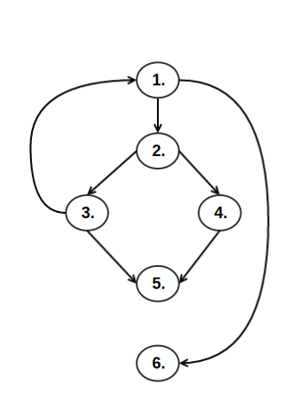
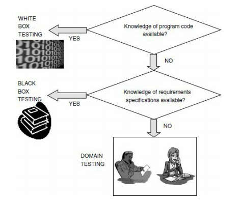

#<center>** "In god we trust, everything else we test"**</center>  --- ####<center>**Table of Contents**</center> 1. [Introduction to testing ](#3) 2. [Goals and objective of software testing ](#4) 3. [Functional testing vs. Structural testing ](#5) 4. [White box testing ](#6) 5. [Classification of white box testing](#7) 6. [Static Testing](#8) 7. [Advantages of static testing done by humans](#9) 8. [Types of static testing by humans](#10) 9. [Some programming errors which can be detected during code inspection](#13) 10. [Challenges in formal inspection](#14) 11. [Using the various methods in combination](#15) 12. [Unit/Code Functional Testing ](#16) 13. [Code coverage testing](#17) 14. [Types of coverage ](#18) 15. [Statement coverage testing](#19) 16. [Branch coverage testing](#21) 17. [Control Flow Graph ( CFG )](#22) 18. [Test Criteria Subsumption](#25) 19. [Condition coverage testing](#26) 20. [Path coverage testing](#30) 21. [Cyclomatic complexity](#31) 22. [Disadvantages of White Box Testing](#36) 23. [Which testing technique is the best?](#37) --- ####<center>**Table of Contents (Contd.)**</center> 24. [What is Black box testing?](#39) 25. [Why is it necessary?](#40) 26. [Advantages of Black box testing](#41) 27. [Disdvantages of Black box testing](#42) 28. [Blackbox Testing vs Whitebox Testing](#43) 29. [Techniques](#44) 30. [Positive and Negative Testing](#48) 31. [Boundary Value Analysis](#50) 32. [Decision Table](#53) 33. [Equivalence Partitioning](#57) 34. [State Based or Graph Based Testing](#59) 35. [Compatibility Testing](#64) 36. [User Documentation Testing](#70) 37. [Domain Testing](#73) 38. [References](#80) --- #<center>**Introduction to testing**</center> ##<u>Definition:</u> *As per International Software Testing Qualifications Board (ISTQB), software testing is a process of executing a program or application with the intent of finding the software bugs.* It can also be stated as the process of validating and verifying that a software program or application or product: <ul> <li>Meets the business and technical requirements that guided its design and development.</li><br> <li>Works as expected.</li><br> <li>Can be implemented with the same characteristic.</li><br> </ul> --- #<center>** Goals and objective of software testing**</center> <ul> <li>Identify all the defects which may have been created by the programmer while developing the software.</li><br> <li>Prevent the occurrence of such defects.</li><br> <li>Make sure that the end product meets the user and business requirements. </li><br> <li>To ensure that the Business Requirement Specification and the System Requirement Specifications are satisfied.</li><br> <li>To provide a quality product to the customers, thereby gaining their confidence.</li><br> However even after carrying out the testing phase satisfactorily , it is not possible to guarantee that the software is error free. </ul> --- #<center>**Functional testing vs. Structural testing**</center> <ul> <li>Functional testing refers to the approach wherein the test cases are designed using only the functional specification of the software, i.e. without any knowledge of the internal structure of the software. It is also known as black box testing.</li><br> <br> <li>Structural testing refers to the approach wherein designing test cases requires thorough knowledge about the internal structure of software. It is also known as white box testing.</li><br> </ul> --- #<center>**White box testing**</center> ##<u> Definition </u> *White box testing is a method of testing the external functionality of the code by examining and testing the program code that realizes the external functionality. This is also known as clear box, or glass box or open box testing.* <ul> <li>This takes into account the program source code, the code structure and the internal design flow.</li><br> <li>Testing the program by looking at the actual code makes us understand what the product is actually doing.</li><br> <li>This type of testing makes the test developer to reason carefully about implementation of his/her code. It can also reveal defects in hidden code and spot issues in context with best programming practices.</li> </ul> --- #<center>**Classification of white box testing**</center> <center><center> --- #<center>**Static Testing**</center> ##<u> Definition </u> *Static testing is a type of testing which is achieved without actually executing the code.* <ul> <li>It requires only the source code of the product being tested, no binaries or executables.</li><br> <li>There is no need to execute the programs on the systems, but it involves the process of selective people going through the source code to check if it works as per the functional requirements.</li><br> <li>This type of testing also checks if any specific functionality has been missed out and that it handles all the errors properly.</li><br> </ul> --- #<center>**Advantages of static testing done by humans**</center> <ul> <li>Static testing by humans helps in finding errors that computers can't detect. e.g. a programmer might make an error while using similar sounding variable names and use the wrong variable name in a particular expression. Execution of such statement will produce incorrect results. But a human can spot such type of errors.</li><br> <li>Evaluation of code by a human can be used to compare whether the code is written as per the specifications and the functionality is as intended.</li><br> <li>Human evaluation is capable of detecting multiple problems in one go and can identify root causes of these problems.</li><br> <li>This kind of testing helps save the computer resources by making humans test the code before it has been executed.</li><br> </ul> --- #<center>**Types of static testing by humans**</center> ## ** 1. Desk checking of the code ** <br> This is usually done by the programmer of that code to check the correctness of various parts of the code. It is the least formal method amongst the other static testing methods. <ul> <li>The programmer compares the written code to the specifications or design and checks whether the code does what it is intended to do.</li><br> <li>Errors, if found, are rectified on the spot.</li><br> <li>This method is effective for correcting coding errors which are obvious. It involves fewer scheduling and logistics overhead and the errors can be fixed with minimum time delay.</li><br> <li>However, since this method is an informal one and person dependent it may not work effectively across multiple developers. Also, the author of the code may be ignorant or prejudiced towards his own code and miss out on certain errors.</li><br> </ul> --- <br><br><br> ## ** 2. Code walkthrough ** <br> This method is more formal than the desk checking method and is a group oriented one. <ul> <li>This method helps in detecting the logical and algorithmic errors in the code.</li><br> <li>A group of people inspect the program code and ask questions to the programmer.</li><br> <li>The programmer answers their questions, explaining the logic behind the code. Also, he/she finds the answers to the questions which they weren't able to answer.</li><br> <li>Being a group oriented approach, this method brings multiple perspectives. The team conducting the walkthrough should ideally consist of 3-7 members.</li><br> </ul> --- <br><br><br> ## ** 3. Code Inspection (Fagan Inspection) ** <br> This method has the highest degree of formalism amongst the other methods. This method aims to detect all possible faults, improper programming, violations and other problems. <ul> <li> The formal inspection should be undertaken only after the programmer has performed a desk checking and a code walkthrough on the code.</li><br> <li> The method uses enlistment of multiple and diverse views.</li><br> <li> Multiple participants are assigned specific role.</li><br> <li> These participants go through the code sequentially in a structured manner.</li><br> </ul> --- # <center>**Some programming errors which can be detected during code inspection**</center> <ul> <li> Infinite loops.</li><br> <li> Jumps into loops.</li><br> <li> Uninitialized variables.</li><br> <li> Incompatible assignments.</li><br> <li>Out of bounds array indices.</li><br> <li>Improper memory allocations and deallocation.</li><br> <li>Comparing equality of different data types.</li><br> <li>Incorrect precedence among operators.</li><br> </ul> --- # <center>**Challenges in formal inspection**</center> <ul> <li> These methods are time consuming as they involve lots of preparation and calling of formal meetings.</li><br> <li> Involvement of multiple people makes the process of logistics and scheduling a tough job.</li><br> <li> Going through each and every line of code isn't always possible to ensure correctness of the code logic and other parameters.</li><br> </ul> --- # <center>**Using the various methods in combination**</center> <ul> <li>All the methods mentioned above need to be combined effectively to achieve the goal of finding defects early.</li><br> <li>The team needs to be highly selective in the parts of the code to be subjected to formal inspection.</li><br> <li>The various portions of the code can be classified based on their criticality as high, medium and low.</li><br> <li>The code sections classified as high or medium should be subjected to formal inspections.</li><br> <li>The code sections classified as a low should be subjected to walkthroughs or desk checking.</li><br> </ul> --- # <center>**Unit/Code Functional Testing**</center> Unit or Code Functional testing comprises of the initial tests that can be done quickly before subjecting the system to more intensive tests. Generally a 'unit' refers to a function. <ul> <li>For blocks of code that have complex code structure, putting intermediate print statements helps to check whether the program is passing through the intended loops and iterations are done the correct number of times. However, once this is done, these print statements have to be removed.</li><br> <li>Certain tools can be used which allow the developer to stop at the end of each instruction. The contents of the variables can be viewed and/or modified.</li><br> <li>If a simple unit of the code cannot be tested easily, it means that the designing of the software system is poor. A good set of unit tests helps in identifying the bugs that are present and in removing them.</li><br> --- # <center>**Code coverage testing**</center> *Code coverage testing is the process of designing and executing test cases which help in finding out the percentage of code that is covered by testing.* <br> <ul> <li>It creates additional test cases to increase coverage and helps in finding areas of a program not exercised by a set of test cases.</li><br> <li>A quantitative measure of code coverage, can be indirectly used to measure the quality of the product.</li><br> <li>However it measures only the coverage of what has been written, i.e. the code itself; it cannot say anything about the code that has not been written yet. </li> <br> </ul> Code coverage is measured as follows: <center> <center> --- # <center>**Types of coverage**</center> ##1. Statement coverage<br> ##2. Branch coverage<br> ##3. Condition coverage<br> ##4. Path coverage<br> --- # <center>**Statement coverage testing**</center> *Statement coverage testing strategy involves designing test cases so that every statement in a program is executed at least once.* <br> Test requirements for this coverage are all the statements in the program. <ul> <li>Test requirements for this coverage are all the statements in the program.</li><br> <li>It verifies what the written code is intended to do and not to do and measures the quality of code written.</li><br> <li>However, it cannot detect whether the loop reaches its termination condition and doesn't understand the logical operator.</li><br> </ul> Statement coverage is measured as follows: <center><center> --- Consider the following code: <br> ``` 1. printSum(int a ,int b){ 2. int result = a+b; 3. if (result>0) 4. print("red", result); 5. else if (result<0) 6. print("blue",result); 7. } ``` <br> <ul> <li>Consider the following test cases TC#1 ( a=3, b=9 ) and TC#2 ( a= -5, b= -8 ) </li><br> <li>By running TC#1, statements 1,2,3,4 and 7 are executed in the given code. By running TC#2, statements 5 and 6 are also executed.</li><br> <li>So by the above mentioned test cases, 100% statement coverage is achieved.</li> </ul> --- # <center>**Branch coverage testing**</center> *Branch coverage-based testing involves designing test cases that make each branch condition to assume true and false values in turn. It is also known as decision coverage or all-edges coverage.* <br> <ul> <li>Test requirements for this coverage are all the branches in the program. </li> <br> <li>Branches are the outgoing edges from a decision point in the code i.e. an if statement, while statement, switch statement.</li><br> <li>It helps to validate if all the branches in the code are reached and ensures that no branches lead to any abnormality of the program’s operation.</li><br> </ul> Branch coverage is measured as follows: <center><center> --- # <center>**Control Flow Graph ( CFG )**</center> To explain branch coverage, we introduce the concept of a control flow graph. <br> <ul> <li>A CFG is a representation of a code which is very convenient when we need to reason about the code and its structure. It describes how the control flows through the program. </li> <br> <li>In a CFG, the statements are represented as nodes and the control flow of the code as edges.</li><br> </ul> --- Control flow graph for the printSum() code is as follows: <center><center> --- Consider the CFG for the printSum() code<br> - It has 2 decision points, so there are 4 branches involved. <br><br> - We take the same test cases used previously, TC#1 ( a=3, b=9 ) and TC#2 ( a= -5, b=-8 ). <br><br> - TC#1 covers the True edge ( 3-->4 ) and TC#2 covers the False edge ( 3-->5 ) and a True edge ( 5-->6 ). <br><br> - So the code coverage achieved through these two test cases is 75%. The 4th False edge (5-->7) isn't exercised. <br><br> - So we take a 3rd test case ( a=0, b=0 ) which tests the False edge . So all the above 3 cases help us achieve a 100% branch coverage. <br><br> - A 100% coverage doesn't necessarily mean that our code is problem free. Testing more thoroughly gives us more chance to identify the problems in the code. --- #<center>**Test Criteria Subsumption**</center> **One test criteria subsumes another criteria when all the test suites that satisfy that particular criteria will also satisfy the other test criteria.** - In other words, a testing technique A is said to be stronger than another testing technique B, if all types of errors detected by technique B are also detected by technique A, and A detects some more types of errors additionally. - e.g. Branch coverage and Statement coverage . The test suite [( a=3, b=9 ) ; ( a= -5, b= -8 ) ; ( a=0, b=0 )] which achieves 100% branch coverage,also achieves 100% statement coverage. - In this case, we say that branch coverage subsumes statement coverage. Thus, branch coverage is a stronger technique than statement coverage, but also more expensive as it involves generation of more number of test cases. --- #<center>**Condition coverage testing**</center> *Condition coverage testing involves designing test cases that make each component of a composite conditional expression to assume both true and false values.* <br><br> - It is closely related to branch coverage but has a better sensitivity to the control flow.<br><br> - It measures the conditions in an expression independently of each other.<br><br> - For a composite conditional expression of n components, 2ⁿ test cases are required for testing condition coverage. Thus, the number of test cases increases exponentially with the number of component conditions in an expression.<br><br> --- ``` 1.void main(){ 2. float x,y; 3. read(x); 4. read(y); 5. if((x==0)||(y>0)) 6. y=y/x; 7. else x=y+2; 8. write(x); 9. write(y); 10. } ``` Consider the above code with the following test cases: (x=5, y=5) (x=5, y= -5) - Both these cases achieve 100% branch coverage. But there is a possibility of code failure when x=0 (division by zero). <br><br> - So even with 100% branch coverage with these test cases, there is possibility of the code failing. <br><br> - For condition coverage, we make each of the individual condition in the expression evaluate to True and False by taking the test cases (x=0, y= -5) and (x=5, y=5). <br><br> - These cases evaluate each of the 2 conditions as True and False and thus 100% condition coverage is achieved. Also, we can detect the zero division error with it. <br><br> --- Control flow graph for the main() code: <center><img src="CFG_2.png" alt="Drawing" style="width: 340px;"/></center> --- <br><br> <center>**100% condition coverage doesn't imply 100% branch coverage**</center> <br> - The branch coverage achieved with the test cases [(x=0, y= -5); (x=5, y=5)] is only 50% as the overall expression always evaluates to True. Thus, 100% condition coverage doesn't imply 100% branch coverage.<br><br> - So it's necessary to develop a test suite which can achieve both branch and condition coverage. So the test suite [(x=0,y=-5);(x=5,y=5);(x=3,y=-2)] achieves a 100% branch and condition coverage which in turn implies statement coverage. --- ##<center>**Path coverage testing**</center> *Path coverage testing involves designing test cases such that all linearly independent paths in the program are executed at least once.* <br><br> - A linearly independent path is defined in context of the control flow graph (CFG) of a program. <br><br> - A path through a program is a node and edge sequence from the starting node to a terminal node of the control flow graph of a program. Its impractical to write test cases to cover all the paths in a code. So, path coverage takes into consideration only the coverage of linearly independent paths. <br><br> - A *linearly independent path* is defined as any path in the program which introduces at least one new edge that is not included in any other linearly independent paths. --- ##<center>**Cyclomatic complexity**</center> - Cyclomatic complexity is a metric that which quantifies the complexity of a program. <br><br> - It defines an upper bound for the number of linearly independent paths in the program code.<br><br> - This indirectly helps us to identify an upper bound on the number of test cases to be executed to ensure that all the statements in the code are executed at least once.<br><br> Consider the following code: ``` int compute_gcd(int x, int y){ 1. while(x!=y){ 2. if (x>y) then 3. x=x-y; 4. else y=y-x; 5. } 6. return x; } ``` --- Control flow graph for compute_gcd() code:<br> <center></center> --- The cyclomatic complexity of the above CFG can be computed in the following ways: <u>**Method 1**</u> <br> The cyclomatic complexity V(G) of a given control flow graph of a program is computed as: <br><br> **V(G) = E – N + 2** <br><br> where **N** is the number of nodes of the control flow graph and **E** is the number of edges in the control flow graph. <br> For the CFG of the compute_gcd() code, **E**=7 and **N**=6. Therefore, the cyclomatic complexity = 7-6+2 = 3. <br><br> <u>**Method 2**</u> <br> The cyclomatic complexity of a program can also be computed as: <br><br> **V(G) = N + 1** <br><br> where **N** is the number of decision statements in the program code. The cyclomatic complexity of the above CFG via this method is 2+1 = 3. --- <br><br> <u>**Method 3**</u> <br> The cyclomatic complexity of a program can also be computed as: <br><br> **V(G) = Total number of bounded areas + 1** <br><br> - In a CGF, a bounded area is any region which is enclosed by nodes and edges. <br><br> - For a structured program, the CGFs will always be planar and this method can be used to compute the complexity. <br><br> - However, the presence of GOTO statements in a program can introduce intersecting edges, making the graph non-planar. In such case, this method of computing complexity can't be used. --- The following table shows the type of code and the actions to be taken based on the computed complexity <br>  --- #<center>**Disadvantages of White Box Testing**</center> - White box testing is an expensive testing process as one has to spend time, human resources and money to perform it. <br><br><br> - There is every possibility that a few lines of code will be missed accidentally. Also, the developers who test their code may have blind spots in detecting defects in them.<br><br><br> - In-depth and sound knowledge about the programming language is necessary to perform white box testing. --- #<center>**Which testing technique is the best?**</center> - Each testing technique discussed so far is best in its own way in finding out certain type of defects.However, they may not be as good for finding out the other kind of defects.<br><br> - e.g. Structure-based techniques can only test what is there in the code. Whereas, if there are parts of the specification that are missing from the code, only specification-based techniques will be able to find them.<br><br> - So the decision of which technique is the best will be based on various factors like - Life cycle models used in developing the system. - The knowledge and experience of the testers. - Risk assessment . - Regulatory requirements. - Time and budget of the overall project. --- #<center>**What is Black box testing?**</center> ##<u>Definition:</u> *Black box testing is a method of software testing that examines the functionality of an application without peering into its internal structures or workings. Knowledge of the internal logic of the system being tested is not required.* <br><br> Blackbox testing is done from the customer's perspective. The tester has a set of input values and a set of expected output values and is unaware of how the inputs are transformed into those outputs. Since the tester is not able to view what happens on the inside, hence the name blackbox. <br><br> The main purpose of the Black Box is to check whether the software is working as per expected in requirement document & whether it is meeting the user's expectations or not. --- #<center>**Why is it necessary?**</center> <ul> <li>Black box testing helps in verification of the overall functionality of the system.</li><br> <li>Black-box testing is most commonly used type of testing in traditional organizations that have testers as a separate department, especially when they are not proficient in coding and have difficulties to understand the code. It provides external perspective of the software under test.</li><br> <li>Since the requirements are an important part of this, it helps in identifying any uncertain, incomplete or inconsistent requirements.</li><br> <li>Black box testing handles explicit or stated requirements and implied requirements. Eg: Page numbers, dates, headers, footers etc all improve readibility of the document for the customer.</li><br> <li>Blackbox testing handles both valid and invalid inputs. Testing for invalid inputs is important as the customer could enter an input incorrectly. It is essential that the software is able to handle such inputs.</li> </ul> --- #<center>**Advantages of Black box testing**</center> <ul> <li>The testing team works independently of the design time. This removes all bias while testing the particular product.</li><br> <li>In other testing techniques, the tester must require some technical knowledge or some programming language. Since black box testing does not require any knowledge of the interntal logic, a non-technical person could also perform testing.</li><br> <li>It helps in identifying cases where requirements are inconsistent or missing or ambigious.</li><br> <li>The testing is performed with the end-user's perspective.</li><br> <li>Once the functional specifications are complete, the test cases can be desgined immediately.</li><br> </ul> --- #<center>**Disdvantages of Black box testing**</center> <ul> <li>The reason for failures is not found as the internal logic is not explored.</li><br> <li>Not all properties of the software system can be tested efficiently. This may lead to a number of paths not being tested.Especially when it comes to testing for invalid inputs.</li><br> <li>Certain segments of the code may be more complex and require more testing. This becomes difficult using black box testing.</li><br> <li>Since the testing team works independently some tests which have already been covered, may get repeated.</li><br> <li>Without having clear specifications, designing test cases becomes difficult.</li><br> </ul> --- #<center>**Blackbox Testing vs Whitebox Testing**</center> There is no simple answer to the question as to which testing methodology is the better one. Both the testing methodologies focus on different aspects of the software.<br><br> Blackbox testing is more concerned about the results produced when fed a certain input. It tests the user's experience with the software<br><br> Whitebox testing pays attention to the details and inner workings of the software. It focuses on the internal structure and attempts to make sure that the software works as efficiently as possible <br><br> Therefore, both these testing methodlogies compliment each other and should be used to ensure that the software is tested as comprehensively as possible. --- #<center>**Techniques**</center> <ul> <b><li><u>Requirement Based Testing:</u></li></b><br> <ul> <li>The requirements that were gathered during the ‘Requirement Gathering’ phase are documented in the Software Requirement Specification (SRS).</li><br> <li>This testing technique deals with validating the SRS i.e., the test cases, conditions and data are all derived from the requirements. </li><br> <li>There are 2 types of requirements:<br> i) Explicit requirements are those that are explicitly stated in the document.<br> ii) Implicit requirements are those that are not specifically mentioned but assumed to be taken care of.</li> </ul> <br><i>The biggest advantage of requirement based testing is that it helps in finding out whatever defects are present early in the life-cycle. This is much more cost-efficient than detecting them at some later stage in the life-cycle process.<i> --- <b>Requirement Traceability Matrix :</b><br> <br>A Requirement Traceability Matrix (RTM) is used to keep track of the various requirements from the beginning and keeps on changing as the lifecycle of the product goes on.<br> <ul> <li>Each requirement is given a unique id and is briefly described. This information is collected from the SRS itself.</li><br> <li>The requirements in an RTM are assigned a priority. Tests which are assigned a higher priority will get executed than those having a lower priority.</li><br> <li>This prioritising of test cases, helps in finding out test cases early in the process.</li><br> <li>Test conditions specify the different ways of running the test cases.</li><br> </ul> --- <b>Example :</b> Let us take a lock and key. We do not know how the levers in the lock work, but we only know the set of inputs (the number of keys, specific sequence of using the keys and the direction of turn of each key) and the expected outcome (locking and unlocking).For example, if a key is turned clockwise it should unlock and if turned anticlockwise it should lock. <center>Requirement Traceability Matrix<center>  --- There are different types of relationships between the requirements and test cases: <ul> <li><b>One to one</b> – For each requirement there is a single test that is performed</li><br> <li><b>One to many</b> – For each requirement there are multiple test cases.</li><br> <li><b>Many to one</b> – For a set of requirements there is a single test that is performed.</li><br> <li><b>Many to many</b> – For a set of requirements there are multiple tests that are performed. This occurs in integration and system testing.</li><br>! <li><b>One to none</b> - The requirement has no test cases. In this case the testing team should make at decsision on how to deal with this requirement.</li><br> </ul> Some requirements require testing in multiple phases of the life-cycle. This criteria could also be mentioned in the RTM. --- <b><u>Advantages of RTM -</u></b><br> <ul> <li>Provides a way to track the status of each requirement throughout the life-cycle.</li><br> <li>Prioritizing the requirement and test cases helps in catching the defects in high-priority areas as soon as possible. Also allows the tester team to create more test cases for the high-priority areas as they are more critical.</li><br> <li>It is easy to see if there are redundant test cases that test the same requirement again which can be removed.</li><br> <li>It is easy to see how many test cases were passed, how many failed, what were the defects that were present, number of requirements tested etc.</li><br> </ul> --- #<center>**Positive and Negative Testing**</center> <b><u>Positive Testing :</u></b><br><br> Positive testing is done to check whether the system does what it is supposed to do when given correct input. It is done to ensure that the system matches the specifications and works as expected.The tester only tests for a valid set of inputs. If no error is expected, then no error should be displayed. If an error is expected, then an error message should be displayed.<br><br> <b><u>Negative Testing :</u></b><br><br> Negative testing is used to cover those areas for which the product is not designed or coded. Certain inputs may not be covered in the specification. When these inputs are encountered, the system should not crash and be able to handle those scenarios properly. The main intention of this testing is to check whether software application does not show error when supposed to and shows an error when not supposed to. --- <b>Example :</b>Let us take a lock and key. We do not know how the levers in the lock work, but we only know the set of inputs - the number of keys, specific sequence of using the keys and the direction of turn of each key, and the expected outcome - locking and unlocking. For example, if a key is turned clockwise it should unlock and if turned anticlockwise it should lock.<br> <center>Positive Testing<br> <br> Negative Testing<br> </center> The negative testing test cases has covered those areas that the system was not designed for.<br><br> <b>Diasdvantage:</b> The problem with negative testing is the coverage. For positive testing, coverage is 100% if all the requirements that are specifed are tested. But for negative testing, there are no requirements that are specified. Achieving 100% coverage for negative testing is impractical. --- #<center>**Boundary Value Analysis**</center> Boundaries are the limits of the values of the variables. Generally the errors near the boundaries occur due to the following reasons -<br> <ul> <li>During comparisons, programmers get confused as to which operator they should use. Eg: '>=' or '>'</li><br> <li>Different ways to implement a loop, each having a separate way to termate the loop could cause some confusion. Eg: While and Do-While.</li><br> <li>The requirement specification may be ambigious arounf the boundaries thus making it difficult to implement.</li><br> </ul> Boundary Value Analysis is useful to generate test cases when the input data is made up of clearly identifiable boundaries or ranges. --- <center>Boundary Value Analysis Example<center>  --- In order to perform boundary value testing:<br> <ul> <li>There should be some discontinuity in data values which affect the system. These discontinuities are where the boundaries exist.</li><br> <li>Identify the limits. The test cases should be developed to test the software system at these values.</li><br> <li>Test the boundaries for hardware requirements also. Eg: If min RAM of a software system is 1GB, this particular boundary should also be tested.</li><br> Boundary value analysis can also apply to white box testing techniques where the boundaries of data structures like arrays, stacks, queues can also be tested. --- #<center>**Decision Table**</center> Decision table lists out all the variables that are involved in the decision making process, the condition of the variables and the actions that need to be taken for each combination of the decision variables. <br><br> The decision variables are columns of the decision tables. The last column lists the actions that are taken. <br><br> If the values for the various decisions can be boolean values, it becomes simpler to read and understand. <br><br> "Don't care" conditions are the conditions which do not affect the outcome and are either left empty or marked with a "-". Each row of the table specifies one test case. As expected, if there are more "don't care" conditions, the number of test cases is minimsed. --- <b>Steps to form a decision table :</b><br><br> <ul> <li>Identify the decision variables invlolved.</li><br><br> <li>Identify the possible values that each decision variable can take.</li><br><br> <li>List out the various possible combinations of the decision variables.</li><br><br> <li>Identify the scenarios when a value of a variable doesn't affect the decision in any way. Mark these as "don't care".</li><br><br> <li>For the various combinations listed out, list out the possible outcome. The end result should be entered in the last column.</li><br><br> </ul> --- <center><b>Example :</b><center> --- <center><b>Decision Table :</b><center> --- #<center>**Equivalence Partitioning**</center> <br> It is a testing technique which involves using a small set of representative values that produce as many different outputs as possible. <br><br> Each set that generates a single expected output is called a partition. When the software behaves in the same way for a set of values, then that set of values is refered to as an equivalence partition. <br><br> From each equivalence partition, a single value is chosen to do the testing. This is because picking multiple values from the same set produces the same result. <br><br> <b>Advantage :</b>Good coverage is attained with just a small number of test cases. If a defect occurs for a particular test value, then that defect will occur for all the other values in that equivalence partition. Thus, it helps in reducing redundancy. --- <center><b>Example :</b><center> <br><br><br> <center><b>Equivalence Partitions :</b><center> --- #<center>**State Based or Graph Based Testing**</center> State or graph based testing is very useful in situations where <br> <ul> <li> The product under test is a language processor (for example, a compiler) <ul> <li>the syntax of the language should automatically lend itself to a state space machine or a context free grammar</li><br> </ul> </li><br> <li> Workflow modeling<br> <ul> <li>depending on the current state and appropriate combinations of input variables, specific workflows are carried out</li> <li>resulting in new output and new state.</li><br> </ul> </li><br> <li> Dataflow modeling <ul> <li>the system is modeled as a set of dataflow, leading from one state to another.</li><br> </ul> </li><br> </ul> --- An example for the first situation is<br> <ul> <li> A number can start with an optional sign. </li> <li> The optional sign can be followed by any number of digits. </li> <li> The digits can be optionally followed by a decimal point, represented by a period. </li> <li> If there is a decimal point, then there should be two digits after the decimal. </li> <li> Any number—whether or not it has a decimal point, should be terminated by a blank. </li> </ul> <br> --- The previous state transition diagram can be used to generate a state-transition table which then can be used to derive test cases to test valid and invalid numbers.<br><br> Graph based testing methods are applicable to generate test cases for state machines such as language translators, workflows, transaction flows, and data flows. <br> <br><br> A general outline for using state based testing methods with respect to language processors is:<br> <ol> <li> <i>Identify the grammar for the scenario.</i><br>In the above example, we have represented the diagram as a state machine. In the case of a context-free grammar, a more sophisticated representation of a “state diagram” may be required.<br> </li><br> <li> <i>Design test cases corresponding to each valid state-input combination.</i> <br> </li><br> <li> <i>Design test cases corresponding to the most common invalid combinations of state-input.</i><br> </li><br> </ol> --- <ul> <li> Graph based testing is also useful to represent a transaction or workflows. </li> <li> Consider a simple example of a leave application by an employee. The application process can be visualized as being made up of the employee filling up a leave application which then goes through an automated process to check whether or not the employee is legible for a leave and then finally to the manager for her/his approval </li><br> <li> The above flow of transactions can again be visualized as a simple state based graph </li> </ul>  --- <ul> <br><br><br><br> <li> A graph can also be converted to a state transititon table. </li><br> <li> Graph based testing such as in this example will be applicable when <ol> <br> <li> The application can be characterized by a set of states. </li><br> <li> The data values (screens, mouse clicks, and so on) that cause the transition from one state to another is well understood. </li><br> <li> The methods of processing within each state to process the input received is also well understood. </li><br> </ol> </li> </ul> --- #<center>**Compatibility Testing**</center> <i>Testing done to ensure that the product features work consistently with different infrastructure components is called compatibility testing. <br><br> </i> <ul> <li> The test case results not only depend on the product for proper functioning; they depend equally on the <i>infrastructure</i> for delivering functionality. </li><br> <li> When infrastructure parameters are changed, the product is expected to still behave correctly and produce the desired or expected results. </li><br> <li> The infrastructure parameters could be of hardware, software, or other components. </li><br> <li> This testing ensures the working of the product with different infrastructure components. </li> </ul> --- <br> A few of the parameters that generally affect the compatibility of the product are : <br> <ul> <li> Processor and the number of processors in the machine </li><br> <li> Architecture and characterstics of the machine </li><br> <li> Operating system and services </li><br> <li> Middle-tier infrastructure components such as web server, application server, network server </li><br> <li> Backend components such database servers </li><br> <li> Services that require special hardware-cum-software solutions </li><br> <li> Any software used to generate product binaries (compiler, linker, and so on and their appropriate versions) </li><br> <li> Various technological components used to generate components (SDK, JDK, and so on and their appropriate different versions) </li><br> </ul> --- <br> <ul> <li> There are many more parameters that can affect the behaviour of the product features. </li><br> <li> If each of these features takes even 4 values then we'll have 4x the test cases. </li><br> <li> Now we need to factior in the permutations and combinations. </li><br> <li> Taking these combinations into consideration, the number of times a particular feature to be tested for those combinations may go to thousands or even millions </li><br> <li> In order to arrive at practical combinations of the parameters to be tested, a <i>compatibility matrix</i> is created. </li><br> <li> A compatibility matrix has as its columns various parameters the combinations of which have to be tested. </li><br> <li> Each row represents a unique combination of a specific set of values of the parameters. </li><br> </ul> --- <center> <i>compatibility matrix for a mail application</i> </center>  --- <br> Some of the common techniques that are used for performing compatibility testing, using a compatibility table are: <br> <ul> <li> <b>Horizontal Combination</b><br> All values of parameters that can coexist with the product for executing the set test cases are grouped together as a row in the compatibility matrix </li><br> <li> <b>Intelligent Sampling</b><br> <ul> <li> In the horizontal combination method, each feature of the product has to be tested with each row in the compatibility matrix. This involves huge effort and time. </li><br> <li> The selection of intelligent samples is based on information collected on the set of dependencies of the product with the parameters. </li><br> <li> If the product results are less dependent on a set of parameters, then they are removed from the list of intelligent samples. All other parameters are combined and tested. </li><br> <li> This method significantly reduces the number of permutations and combinations for test cases. </li><br> </ul> </li> </ul> --- Compatibility testing not only includes parameters that are outside the product, but also includes some parameters that are a part of the product. <br> The compatibility testing of a product involving parts of itself can be further classified into two types <ul> <li> <b>Backward compatibility testing</b><br> There are many versions of the same product that are available with the customers. So it is important for the customers that the objects, object properties, schema, rules, reports, and so on, that are created with an older version of the product continue to work with the current version of the same product. </li><br> <li> <b>Forward compatibility testing</b><br> <ul> <li> There are some provisions for the product to work with later versions of the product and other infrastructure components, keeping future requirements in mind. </li><br> <li> Testing the product with a beta version of the operating system, early access version of the developers’ kit, and so on are examples of forward compatibility. This type of testing ensures that the risk involved in product for future requirements is minimized. </li><br> </ul> </li> </ul> Compatibility testing begins after validating the product in the basic environment. It is a type of testing that involves high degree of effort, as there are a large number of parameter combinations --- #<center>**User Documentation Testing**</center> User documentation testing should have two objectives : <ol> <li> To check if what is stated in the document is available in the product. </li><br> <li> To check if what is there in the product is explained correctly in the document. </li> </ol> <ul> <li> User documentation covers all the manuals, user guides, installation guides, setup guides, read me file, software release notes, and online help that are provided along with the software to help the end user to understand the software system. </li><br> <li> When a product is upgraded, the corresponding product documentation should also get updated as necessary to reflect any changes that may affect a user. </li> </ul> User documentation is done to ensure the documentation matches the product and vice-versa. --- <br><br> <ul> <li> User documentation testing <b>focuses on ensuring what is in the document exactly matches the product behavior</b>, by sitting in front of the system and verifying screen by screen, transaction by transaction and report by report. </li><br> <li> In addition, user documentation testing also <b>checks for the language aspects of the document</b> like spell check and grammar. </li><br> <li> Most often users don't understand the basics of the software and require some initial help or tour of the system to help them get familiar with it. </li><br> <li> Since these documents are the first interactions the users have with the product, they tend to create lasting impressions. </li><br> <li> A badly written installation document can put off a user and bias him or her against the product, even if the product offers rich functionality. </li> </ul> --- <br> Some of the benefits that ensue from user documentation testing are: <ol> <li> User documentation testing aids in highlighting problems over looked during reviews. </li><br> <li> If user documentation is of high quality, then the number of defects reported by customers is minimized. Time taken for troubleshooting or support calls is also less thus minimizing the overall support cost. </li><br> <li> Ensuring that a product is tested to work as per the document and that it works correctly contributes to better customer satisfaction and better morale of support staff as well as results in less difficult support calls. </li><br> <li> New programmers and testers who join a project group can use the documentation to learn the external functionality of the product. </li><br> <li> Customers need less training and can proceed more quickly to advanced training and product usage if the documentation is of high quality and is consistent with the product. Thus high-quality user documentation can result in a reduction of overall training costs for user organizations. </li><br> </ol> paraphrase --- #<center>**Domain Testing**</center> In domain testing we test the product purely based on domain knowledge and expertise in the domain of application. <br><br> This testing approach requires: <ul> <li> critical understanding of the day-to-day business activities for which the software is written </li><br> <li> business domain knowledge rather than the knowledge of what the software specification contains or how the software is written </li> </ul> --- <i>Domain testing exploits the tester's domain knowledge to test the suitability of the product to what the users do on a typical day.</i><br><br> Context of white box, black box and domain testing.<br>  --- We can consider domain testing as an extension of black box testing. <br><br> We start focusing more on the functioning of the software, i.e., it's behaviour rather and less on the details of the software system <br>  --- <br> The test engineers performing this type of testing are selected because they have in-depth knowledge of the business domain.<br><br> However, domain knowledge and system knowledge overlap and hence testers are also required to have knowledge regarding the generalized working of the system.<br> <ul> <li> This reduces the effort and time required for training the testers in domain testing and also increases the effectivenes of domain testing. </li> </ul> <br><br> --- <br> Let us take the example of an ATM system's functioning: <br><br> --> A user goes to the ATM machine, slides his card into the machine, enters his PIN, withdraws cash and leaves the session<br><br> --> In this scenario, the domain tester is not concerned with the design of the system, but rather with the business flow of the system.<br><br> --> Testing for things such as whether or not the required denomination is present in the system and whether it is in the right amount are to be taken care of before domain testing. These are other forms of black box testing. <br><br> --> In domain testingm the tester is concerned only with whether or not the user got the right amount.<br><br> --> Due to this, sometimes test cases, or intermediate test cases, appear to be missing from the domain tester's code. <br><br> --> This is not an anomaly. It is just that all those design related tests are to have been executed before the domain testing stage. --- <br> - Black box testing advocates testing those areas which matter more for a particular type or phase of testing. <br><br> - Techniques like equivalence partitioning and decision tables are useful in the earlier phases of black box testing and they catch certain types of defects or test conditions.<br><br> - Generally, domain testing is done after all components are integrated and after the product has been tested using other black box approaches (such as equivalence partitioning and boundary value analysis). <br><br> - Hence the focus of domain testing has to be more on the business domain to ensure that the software is written with the intelligence needed for the domain. <br><br><br> <center> ~END~ </center> --- #<center>**References**</center> [1] Software Testing: Principles and Practices - Srinivasan Desikan and Gopalaswamy Ramesh<br> [2] Fundamentals of Software Engineering - Rajib Mall<br> [3] Software Development Process Course - Udacity<br> [4] Wikipedia<br> [5] http://www.istqbexamcertification.com<br> [6] http://www.softwaretestingclass.com<br> [7] http://www.guru99.com<br> [8] http://www.ofnisystems.com/services/validation/traceability-matrix/<br> [9] http://softwaretesteranil.blogspot.com/2015/05/difference-between-black-box-testing.html --- #<center>**Images**</center> [1] All images after slide 60 taken from <i>'Software Testing: Principles and Practices - Srinivasan Desikan and Gopalaswamy Ramesh'</i>